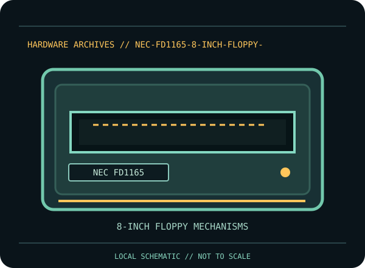

[ INDIVIDUAL COMPONENT // FLOPPY DRIVES ]
NEC FD1165 8-inch Floppy Drive
This record identifies a documented physical floppy drive, controller, or preservation interface. It separates confirmed model facts from details that vary by suffix, board revision, host, media and configuration.

IDENTIFICATION NOTE: Match the full model/part number, revision, connector and manual before use. Similar family names do not establish interchangeable mechanics or host compatibility.
Model specifications
| Catalog subcategory | 8-inch floppy mechanisms |
|---|---|
| Exact model / family | NEC FD1165 |
| Era / product family | NEC FD1165 8-inch diskette mechanism |
| Documented characteristics | Identified NEC 8-inch diskette drive model. NEC’s product description and maintenance manual are the model references; suffix and configuration determine the exact recording mode and electrical details, so no capacity or pinout is assigned without checking the unit and manual. |
| Interface / connectors | 8-inch drive electrical interfaces and power differ across models and are not interchangeable by connector appearance. Use the FD1165 documentation and the full model/revision label to confirm signal levels, pinout, termination and power before connection. |
| Host and media compatibility | Only pair the FD1165 with a controller documented for the exact FD1165 configuration and recording mode. 8-inch media, spindle speed, density and controller data rate must all agree; this record does not imply compatibility with 5.25-inch PC controllers. |
Model-specific compatibility checks
- Identify the complete model/suffix, board revision, serial/date codes and connector arrangement from the physical unit; photograph all labels before installation.
- Only pair the FD1165 with a controller documented for the exact FD1165 configuration and recording mode. 8-inch media, spindle speed, density and controller data rate must all agree; this record does not imply compatibility with 5.25-inch PC controllers.
- Confirm the host controller, drive wiring, power, drive select, termination, media density and recording format against the cited model documentation. Do not infer a fit or capacity solely from the drive size or connector shape.
Preservation and service notes
NEC provides FD1165-specific maintenance documentation. Follow its handling and adjustment procedures; inspect media before loading and stop on abnormal noise or resistance. Document alignment/test equipment and preserve flux or sector captures separately from decoded files.
Keep original media and raw captures intact. Log the exact drive/controller/software configuration, acquisition date, condition and any service performed; checksum verified copies before creating derivatives.
Manufacturer documentation & sources
- NEC — FD1165 Product Description (April 1982)Model-specific NEC product description.
- NEC — FD1165 Maintenance Manual (October 1982)Model-specific NEC maintenance procedure and service reference.
Sources are model-specific manufacturer documentation or archival copies of the original source. Where a document covers a family or multiple revisions, confirm its applicability to the exact unit before using an electrical or service specification.